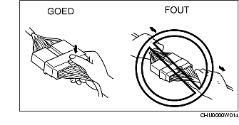
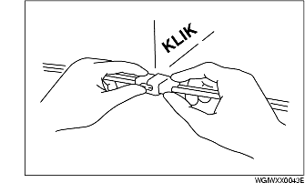
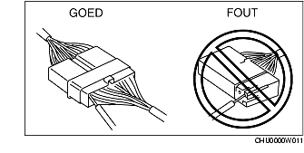

ELEKTRISCH SYSTEEM
B3E000000006201
Stekkers
Losnemen van stekkers
-
• Trek bij het losnemen van stekkers nooit aan de draden maar altijd aan het stekkerhuis.

-
• Stekkers kunnen losgenomen worden door het borglipje in te drukken of omhoog te trekken zoals aangegeven is.

Stekkers aansluiten
-
• Let bij het aansluiten van stekkers erop dat u een klik hoort; dit geeft aan dat de stekkers goed geborgd zijn.

Controleren
-
• Steek een testpen vanaf de bedradingszijde in de stekker, wanneer een meter gebruikt wordt om op doorverbinding te controleren of spanning te meten.

-
• Controleer de aansluitingen van waterdichte stekkers vanaf de aansluitzijde aangezien deze niet vanaf de bedradingszijde toegankelijk zijn.
-
Opmerking
-
• Wikkel een dun draadje om de testpen ter voorkoming van schade aan de aansluitingen.